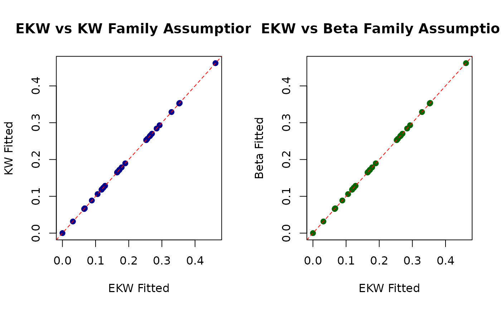
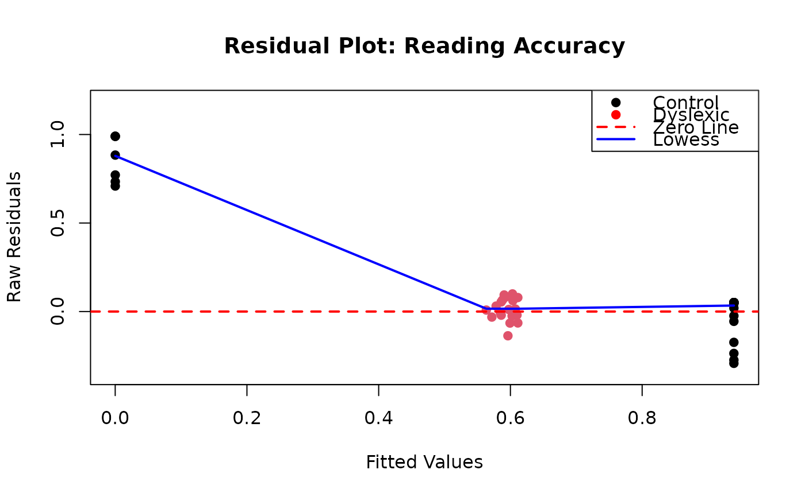

Extract Fitted Values from a Generalized Kumaraswamy Regression Model
Source:R/gkwreg-residuals.R
fitted.gkwreg.RdExtracts the fitted mean values (predicted expected values of the response)
from a fitted Generalized Kumaraswamy (GKw) regression model object of class
"gkwreg". This is an S3 method for the generic
fitted.values function.
Usage
# S3 method for class 'gkwreg'
fitted(object, family = NULL, ...)Arguments
- object
An object of class
"gkwreg", typically the result of a call togkwreg.- family
Character string specifying the distribution family under which the fitted mean values should be calculated. If
NULL(default), the family stored within the fittedobjectis used. Specifying a different family (e.g.,"beta") will trigger recalculation of the fitted means based on that family's mean structure, using the original model's estimated coefficients mapped to the relevant parameters. Available options match those ingkwreg:"gkw", "bkw", "kkw", "ekw", "mc", "kw", "beta".- ...
Additional arguments, currently ignored by this method.
Value
A numeric vector containing the fitted mean values. These values are
typically bounded between 0 and 1, corresponding to the scale of the original
response variable. The length of the vector corresponds to the number of
observations used in the model fit (considering subset and na.action).
Details
This function retrieves or calculates the fitted values, which represent the estimated conditional mean of the response variable given the covariates (\(E(Y | X)\)).
The function attempts to retrieve fitted values efficiently using the following priority:
Directly from the
fitted.valuescomponent stored in theobject, if available and complete. It includes logic to handle potentially incomplete stored values via interpolation (approx) for very large datasets where only a sample might be stored.By recalculating the mean using stored parameter vectors for each observation (
object$parameter_vectors) and an internal function (calculateMeans), if available.From the
fittedcomponent within the TMB report (object$tmb_object$report()), if available, potentially using interpolation as above.As a fallback, by calling
predict(object, type = "response", family = family).
Specifying a family different from the one used to fit the model will
always force recalculation using the predict method (step 4).
Examples
# \donttest{
require(gkwreg)
require(gkwdist)
# Example 1: Basic usage with FoodExpenditure data
data(FoodExpenditure)
FoodExpenditure$prop <- FoodExpenditure$food / FoodExpenditure$income
fit_kw <- gkwreg(prop ~ income + persons | income,
data = FoodExpenditure,
family = "kw"
)
# Extract fitted values
fitted_vals <- fitted(fit_kw)
# Visualize fit quality
plot(FoodExpenditure$prop, fitted_vals,
xlab = "Observed Proportion",
ylab = "Fitted Values",
main = "Observed vs Fitted: Food Expenditure",
pch = 19, col = rgb(0, 0, 1, 0.5)
)
abline(0, 1, col = "red", lwd = 2)
# Calculate R-squared analogue
cor(FoodExpenditure$prop, fitted_vals)^2
#> [1] 0.4596754
# Example 2: Comparing fitted values across families
data(GasolineYield)
fit_ekw <- gkwreg(yield ~ batch + temp | temp | batch,
data = GasolineYield,
family = "ekw"
)
# Fitted values under different family assumptions
fitted_ekw <- fitted(fit_ekw)
fitted_kw <- fitted(fit_ekw, family = "kw")
#> Using different family (kw) than what was used to fit the model (ekw). Recalculating fitted values...
fitted_beta <- fitted(fit_ekw, family = "beta")
#> Using different family (beta) than what was used to fit the model (ekw). Recalculating fitted values...
# Compare differences
comparison <- data.frame(
EKW = fitted_ekw,
KW = fitted_kw,
Beta = fitted_beta,
Diff_EKW_KW = fitted_ekw - fitted_kw,
Diff_EKW_Beta = fitted_ekw - fitted_beta
)
head(comparison)
#> EKW KW Beta Diff_EKW_KW Diff_EKW_Beta
#> 1 0.12232728 0.12232728 0.12232728 0 0
#> 2 0.00010000 0.00010000 0.00010000 0 0
#> 3 0.35297443 0.35297443 0.35297443 0 0
#> 4 0.46181798 0.46181798 0.46181798 0 0
#> 5 0.06734871 0.06734871 0.06734871 0 0
#> 6 0.12862292 0.12862292 0.12862292 0 0
# Visualize differences
par(mfrow = c(1, 2))
plot(fitted_ekw, fitted_kw,
xlab = "EKW Fitted", ylab = "KW Fitted",
main = "EKW vs KW Family Assumptions",
pch = 19, col = "darkblue"
)
abline(0, 1, col = "red", lty = 2)
plot(fitted_ekw, fitted_beta,
xlab = "EKW Fitted", ylab = "Beta Fitted",
main = "EKW vs Beta Family Assumptions",
pch = 19, col = "darkgreen"
)
abline(0, 1, col = "red", lty = 2)

par(mfrow = c(1, 1))
# Example 3: Diagnostic plot with confidence bands
data(ReadingSkills)
fit_mc <- gkwreg(
accuracy ~ dyslexia * iq | dyslexia + iq | dyslexia,
data = ReadingSkills,
family = "mc"
)
fitted_vals <- fitted(fit_mc)
# Residual plot
residuals_resp <- ReadingSkills$accuracy - fitted_vals
plot(fitted_vals, residuals_resp,
xlab = "Fitted Values",
ylab = "Raw Residuals",
main = "Residual Plot: Reading Accuracy",
pch = 19, col = ReadingSkills$dyslexia,
ylim = range(residuals_resp) * 1.2
)
abline(h = 0, col = "red", lwd = 2, lty = 2)
lowess_fit <- lowess(fitted_vals, residuals_resp)
lines(lowess_fit, col = "blue", lwd = 2)
legend("topright",
legend = c("Control", "Dyslexic", "Zero Line", "Lowess"),
col = c("black", "red", "red", "blue"),
pch = c(19, 19, NA, NA),
lty = c(NA, NA, 2, 1),
lwd = c(NA, NA, 2, 2)
)

# Example 4: Large dataset efficiency check
set.seed(2024)
n <- 5000
x1 <- rnorm(n)
x2 <- runif(n, -2, 2)
alpha <- exp(0.3 + 0.5 * x1)
beta <- exp(1.2 - 0.4 * x2)
y <- rkw(n, alpha, beta)
large_data <- data.frame(y = y, x1 = x1, x2 = x2)
fit_large <- gkwreg(y ~ x1 | x2,
data = large_data,
family = "kw"
)
# Time the extraction
system.time({
fitted_large <- fitted(fit_large)
})
#> user system elapsed
#> 0 0 0
# Verify extraction
length(fitted_large)
#> [1] 5000
summary(fitted_large)
#> Min. 1st Qu. Median Mean 3rd Qu. Max.
#> 0.003856 0.207005 0.322890 0.330228 0.440560 0.848744
# }